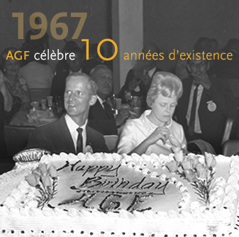
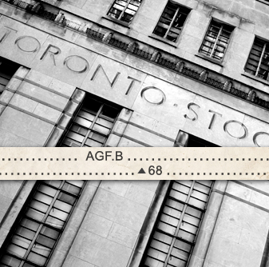
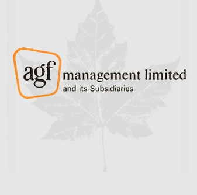

1960
Une croissance sans précédent
-
- De 1962 à 1973, le Canada connaît la croissance la plus soutenue, la plus généralisée et la plus fulgurante de l’histoire moderne.
Les Canadiens n’ont jamais eu autant d’argent à dépenser, à épargner et à investir.
-
 1962 1962 AGF lance des fonds admissibles aux REER
1962 1962 AGF lance des fonds admissibles aux REER
Le 15 août 1962, AGF lance le Canadian Trusteed Income Fund.*
Le 22 octobre 1964, AGF lance le Growth Equity Fund.**
*Rebaptisé ultérieurement Fonds d’obligations canadiennes AGF, qui a fusionné avec le Fonds de revenu fixe Plus AGF le 20 mai 2016.
**Maintenant appelé Catégorie Actions de croissance canadiennes AGF.
-
 1965 1965 AGF aide à créer la CVMO
1965 1965 AGF aide à créer la CVMO
En janvier 1965, Warren Goldring est nommé au Comité Kimber – établi par le procureur général en vue d’établir la législation sur les valeurs mobilières de l’Ontario – qui contribuera à la création de la Commission des valeurs mobilières de l’Ontario.
-

-
1968 1968 AGF est cotée à la bourse
Constituée en société en février 1960, La Société de Gestion AGF Limitée fait son entrée à la Bourse de Toronto en 1968. À cette époque, AGF est la troisième entreprise de gestion en importance du Canada.*
*Source : A Study of The Canadian Mutual Funds Industry, The Canadian Mutual Funds Association, 1969
-
« À la fin de 1969, AGF gère un actif de 350 millions de dollars (12,4 % de l’industrie) et 100 000 comptes d’investisseurs ».